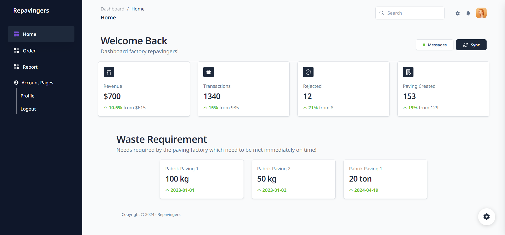

Project Highlights

Halaman Utama
Platform Inovatif untuk Menghubungkan Penjual Limbah Plastik, Komunitas Peduli Lingkungan, dan Produsen Paving di Seluruh Indonesia.

Dashboard
Menampilkan informasi tentang pendapatan, transaksi, paving yang dibuat, dan limbah yang dihasilkan di tiga pabrik paving yang berbeda. Pengguna dapat memonitor dan mengelola proyek paving dengan lebih efektif dan efisien dengan informasi ini.